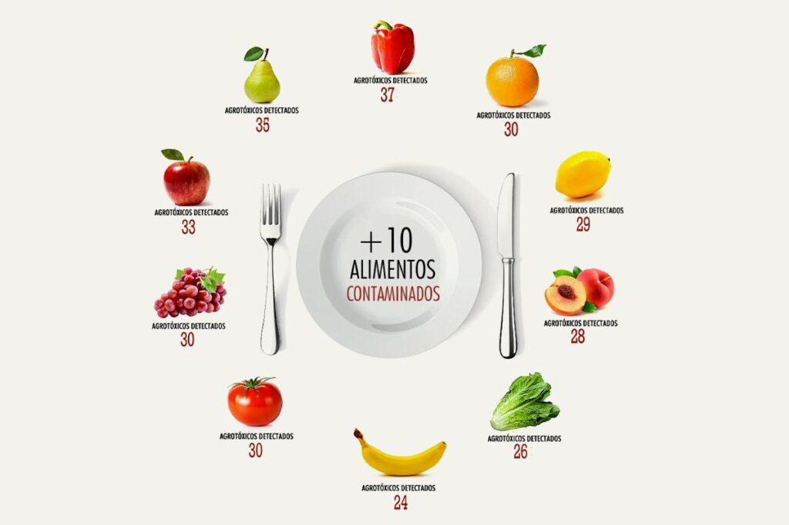
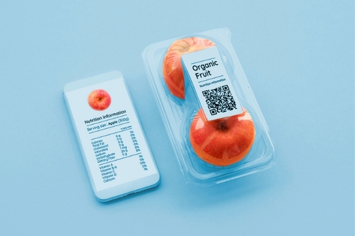
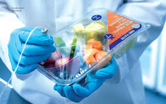
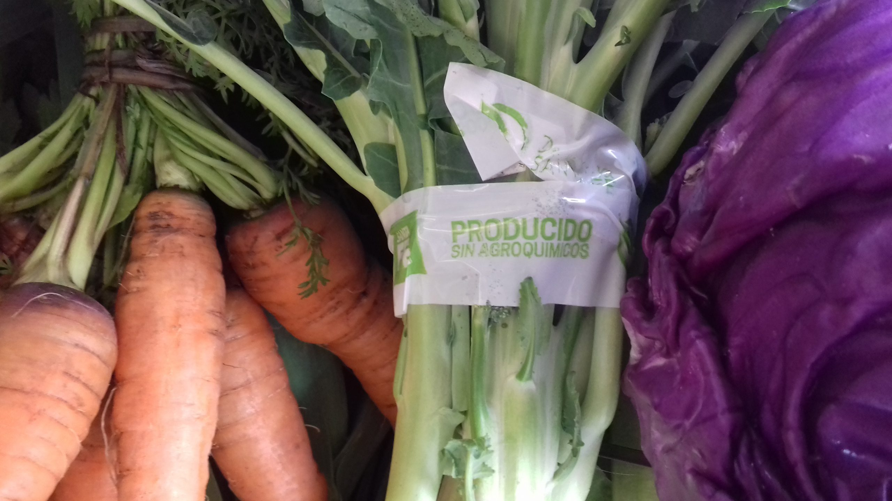

Introducción y Desafío Alimentario
El desafío alimentario global requiere soluciones innovadoras para alimentar a una población creciente y longeva de manera sostenible y segura. En Argentina, el uso excesivo de agroquímicos en la agricultura plantea serias preocupaciones tanto en términos de salud pública como en el ámbito del comercio internacional.
Nanoindicadores como Solución Innovadora
Los nanoindicadores son dispositivos que cambian de color al detectar la presencia de ciertos agroquímicos, debido a alteraciones en su estructura molecular. Estos dispositivos se fabrican utilizando nanopartículas de oro o plata, funcionalizadas con compuestos químicos específicos que reaccionan con pesticidas, herbicidas y otros contaminantes.
Implementación y Beneficios en la Cadena de Suministro
Los nanoindicadores deben ser incorporados individualmente en los envases de cada alimento para asegurar una monitorización precisa y continua. Esta implementación garantiza que cada producto monitoree su propia condición y calidad, proporcionando datos inmediatos y específicos sobre la presencia de agroquímicos.
 Ver Etapas del ProyectoImpacto en el Mercado de Productos Orgánicos
Los nanoindicadores integrados en los envases alimentarios permitirían a los consumidores verificar fácilmente si los productos contienen residuos de agroquímicos, aumentando la confianza en la autenticidad y seguridad de los alimentos orgánicos y mejorando la competitividad internacional de los productos argentinos.
Costos y Futuro de los Nanoindicadores
A medida que la tecnología de nanoindicadores madura y se escala, se espera que los costos de producción disminuyan, permitiendo que estos dispositivos se vuelvan más accesibles para su uso en la detección de agroquímicos. Aunque los costos iniciales de investigación y desarrollo son elevados, esta inversión es marginal comparada con los beneficios en términos de protección de la salud pública y reducción del desperdicio alimentario.
